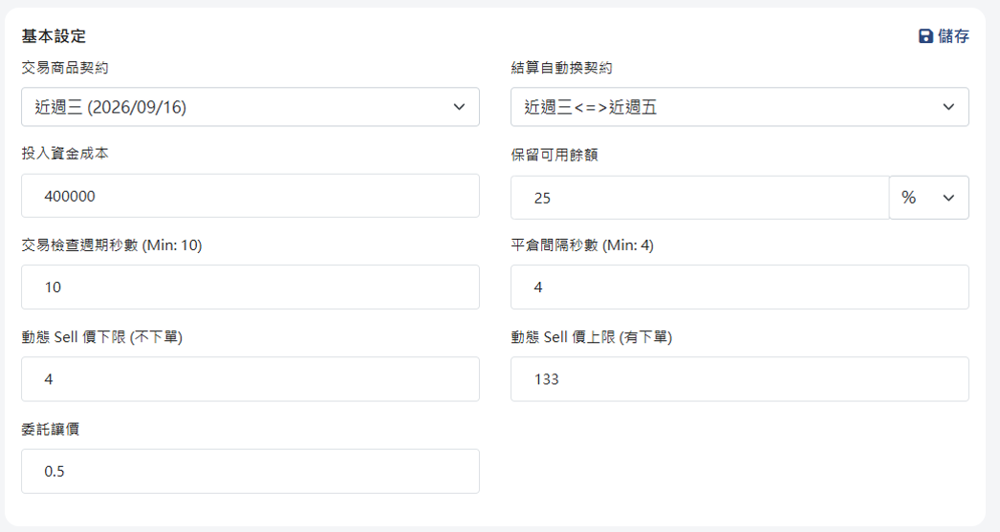
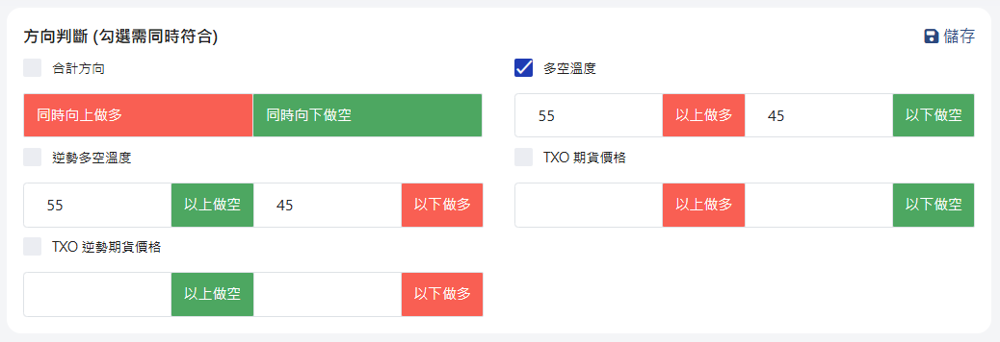
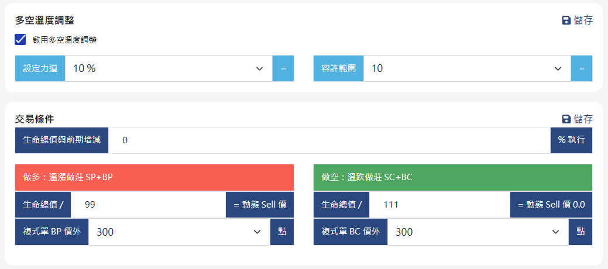
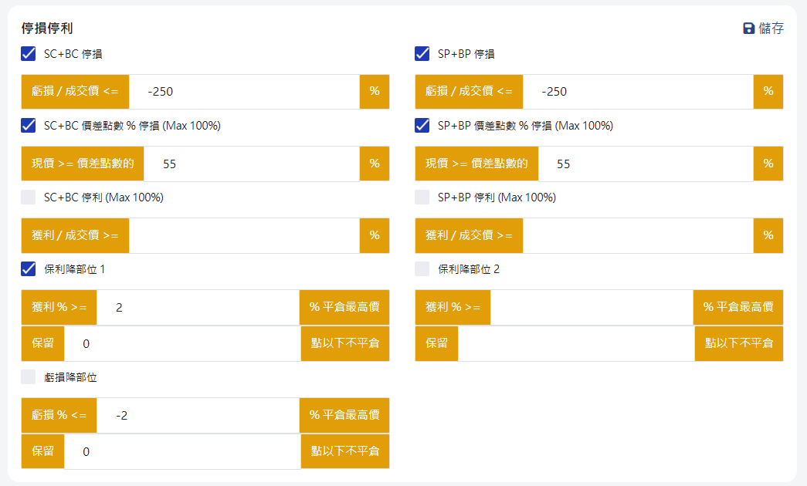
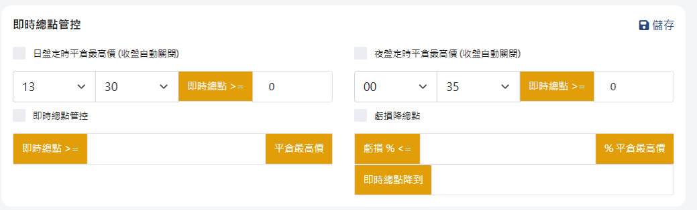

什麼是選擇權與垂直價差？
為零基礎讀者拆解：為什麼新手絕對不能「裸賣」，而必須採用自帶安全帶的「垂直價差」？
💡 生活化比喻：保險公司與保戶
選擇權主要分為買方（Buy）與賣方（Sell，做莊）：
- 買方（買保險）：支付權利金（保費）。若市場出現符合預期的大漲或大跌，可享有數倍獲利；若行情不動，保費將隨時間流逝自然歸零。
- 賣方（保險公司做莊）：先收取權利金（保費）。只要大盤不突破特定關卡，在特定市場條件下，嘗試獲取時間價值收益（Theta）。
- 裸賣的致命風險：若只單純做賣方（裸賣），一旦遇到突發黑天鵝或單邊暴漲暴跌，虧損金額可能沒有上限，極度危險！
🛡️ 什麼是「垂直價差」（Vertical Spread）？
垂直價差就是在「做莊收租」的同時，也「買一張遠價外的保護腳（買保險）」，最大損失可依價差結構事先估算，但仍有滑價、流動性與執行風險。
因為有了保護腳，垂直價差的理論損失上限通常可事先估算，但實際損益受成交與市場條件影響。
溫漲做莊（SP + BP） 多方價差
組合方式：賣出較高履約價的 Put（收取權利金）＋ 買進更低履約價的 Put（買保護腳保險）。
適用情境：當智能系統指標偏多（>55）時建立。只要大盤溫和上漲、盤整或小跌不破防守線，即可收取全額權利金。
溫跌做莊（SC + BC） 空方價差
組合方式：賣出較低履約價的 Call（收取權利金）＋ 買進更高履約價的 Call（買保護腳保險）。
適用情境：當智能系統指標偏空（<45）時建立。只要大盤溫和下跌、盤整或小漲不破天花板，即可收取全額權利金。
什麼是「微中性策略」？
平衡時間價值獲利與單邊走勢風險的核心哲學
⚖️ 傳統中性 vs 微中性（Micro-Neutral）
市場上常見的「完全中性策略」（Delta=0），雖然兩端對抗平衡，但容易在行情出現小單邊時引發過度頻繁的對沖調整，產生多餘手續費與磨損成本。
「微中性策略」的優勢：
- 雙向收租為本：平時透過 Call 價差與 Put 價差同時在盤中收取時間價值（Theta Decay）。
- 微幅傾斜（力道 10%）：不是呆板的五五對等，而是依據市場多空溫度只給予 10% 的微調力道，順勢微傾，不劇烈翻多翻空。
- 足夠寬的容許範圍（設定為 10）：過濾盤中細微雜訊，維持高安定度。

| 階段 | 核心目標 | 微中性策略落實機制 |
|---|---|---|
| 第一階段：基礎與資金規劃 | 挑選流動性熱絡契約，嚴守資金額度 | 鎖定近週三與近週五自動換約，嚴格保留 25% 以上可用資金作為安全避震緩衝。 |
| 第二階段：方向與動態平衡 | 多空過濾建倉，維持雙向微中性 | 多空溫度 >55 溫漲做莊、<45 溫跌做莊；透過 10% 力道與容許範圍 10 進行平滑平衡。 |
| 第三階段：嚴格風險控管 | 系統依規則處理，但極端行情、斷線、流動性不足仍可能影響執行 | 組合單 -250% 與價差 55% 停損；獲利達 2% 啟動保利降部位機制，保住戰果。 |
| 第四階段：定時平倉與結算 | 避開非流動時段與結算劇烈波動 | 非結算日於 13:30 / 00:35 彈性出清參考；結算日務必於 12:50 提早出清全部歸零。 |
智能交易 9 大核心設定指南
依據實務設定參數，手把手帶您逐項配置下單機系統

結算自動換契約 合約換約
設定原因：越接近到期日期的週選擇權契約交易最為熱絡、流動性最佳。選擇在近週三與近週五之間自動切換，能有效降低委託時的買賣滑價風險，確保每次委託與成交都最貼近真實市價。
投入資金成本 資金基準
設定原因：下單機內的所有比例（如可用金額 %、權益總值報酬率 %、停損保利 %）都是以您在此處手動輸入的「資金成本」作為計算分母。若帳戶實際注資或提領變動，請務必在此同步更新數值。
保留可用餘額 額度管理
核心觀念釐清：新手最常困惑的是「明明帳戶還有可用資金，為什麼下單機卻無法下單？」
答案在於：交易額度太少！雖然垂直價差具備保護腳結構，但整體帳戶仍須依期貨商風控、帳戶權益與市場狀況管理，不保證不會發生風險處置。實務上下單機常遇到的是期貨商給帳戶的「交易額度」有限，若交易額度太少就會被限制無法下單。保留 25% 作為安全水位，能確保系統有餘裕進行後續的雙向調整，當可用餘額低於 25% 時系統會自動停止建新倉。
動態 Sell 價上限（有下單） 履約控制
設定原因：防止系統委託的賣出履約價點數過大。點數過大代表該履約價過於靠近價平或價內，面臨被大盤穿透的風險暴增。將上限設為 133 能有效過濾高風險檔位，維持安全履約價間隔。
參考【基本設定】環境參數 系統環境
設定要領：檢查建立新部位的週期最少 10 秒；平倉與調整部位間隔最少 4 秒以防重複連續下單；「動態 Sell 價下限設為 4」（低於 4 點表示時間價值過薄，不符交易手續費成本，不下單）；委託讓價設 0.5 點以提高成交機會。

方向判斷：多空溫度指標 進場過濾
設定原因：由系統報價反推市場買權與賣權總點比例：當數值在 55 以上時執行「溫漲做莊 SP+BP」；45 以下執行「溫跌做莊 SC+BC」；落在 45～55 之間代表市場方向不明，多空互抵不建新倉，嘗試降低部分訊號雜訊，不能保證避免虧損。

多空溫度調整與交易條件 微中性靈魂
核心原理拆解：
- 設定力道 10%：力道越低越偏向完全中性（0% 為絕對中性）。10% 既能保持雙向收租，又具備微幅動態對沖能力。
- 容許範圍（選單僅 5/10/15/20...50 可選）：實務建議選擇 10。容許範圍若設太小會造成下單機過度頻繁交易洗盤；設太寬則保護反應過慢。
- 關鍵機制（建新倉 vs 平舊倉）：當持倉溫度跑出容許範圍需要調整時，程式究竟會在正確方向「建新倉」還是「平舊倉」？這完全取決於當時的可用資金是否超過預設保留的 25%：
• 可用資金 ＞ 保留 25%（資金充足）：程式會在正確方向建立新倉（以對沖部位拉回中性溫度）。
• 可用資金 ＜ 保留 25%（資金不足）：程式絕不冒進加倉，而是會在正確方向平倉舊部位（以減倉方式拉回中性溫度並釋放資金）。 - 生命總值增減 % 設為 0：填入 0 代表隨時符合增減條件，不論市場生命總值是微增還是微減，只要可用資金與多空條件符合，下單機隨時都能依動態 Sell 價建立新倉。
- 複式單 BP / BC 價外點數（價差寬度）：完全新手建議從 100 點、200 點或 300 點 起步。可隨接近結算日而逐步縮小（初期 200~300 點安全距離大，接近結算時縮小至 100 點提高資金收益率）。

停損停利與保利降部位 紀律防守
嚴密的三道防護網與點數計算：
- SC+BC / SP+BP 停損（-250%）：以收取權利金為基數。例如當初進場淨收 10 點（成本），虧損 250% 即為虧損 25 點。
⚠️ 特別提醒：委託平倉點數是包含原本的成本！因此委託平倉點數為 10 點原本成本 ＋ 25 點虧損 ＝ 35 點！系統以此點數送出平倉委託。 - 價差點數 % 停損（55%）：不考慮原先成交價，只要現價點數膨脹超過價外點數的 55%（約價平位置），強制停損退場，絕不留戀。
- 保利降部位 1（獲利 2%，保留 0 點以下不平倉）：當總資金獲利達到 2% 時，系統主動平倉高價危險部位，落袋為安。
- 彈性備註：在結算前一天（週二或週四日盤），若帳戶已累積獲利 0.5%，可視盤勢狀況彈性將保利數值改為 0.5% 提早保利；虧損降部位 -2% 則可自行評估定期勾選。

定時出清部位（即時總點管控） 結算紀律
設定邏輯與新手注意：
- 非結算日（13:30 / 00:35）：此為提供選擇參考的出場時間點，非強制執行。供希望降低留倉跨日/跨盤跳空風險的交易者評估使用，於日盤收盤前（13:30）或夜盤熱絡時段結束後（00:35）自動平倉最高價部位至即時總點歸零。
- 結算日（12:50）：結算日（週三或週五）最後 30 分鐘（13:00~13:30）常出現法人控盤或劇烈波動，因此設定於 12:50 提早出清歸零，徹底鎖住獲利！

新手最常踩的坑與常見 Q&A
整理完全新手實務操作中最容易困惑的 10 個核心問題與權威解答
而在實務操作中，使用者常遇到「明明還有可用資金，卻無法下單」的情況，原因出在「期貨商給的交易額度太少」！
期貨商給帳戶的每日常態交易額度若設得太低，額度用罄後就無法再送出新委託。因此「保留可用餘額 25%」能確保帳戶維持靈活彈性；若頻繁出現可用資金充足卻無法下單，只需向期貨商營業員申請提高交易額度即可。
- 力道 10%：代表系統對市場多空溫度的採納比例只有 10%，其餘 90% 依舊回歸完全中性中軸（50）。力道越低（接近 0%），部位越趨向絕對中性；設定 10% 既能保持中性收租，又具備微幅避險能力。
- 容許範圍（選單僅有 5/10/15/20...50 可選）：代表持倉溫度偏離期望值多少以內「不觸發調整」。設為 10 是最佳平衡點；若設為 5 會過度敏感引發頻繁交易手續費耗損；若設太寬則無法及時對沖。
- 建倉還是平倉的決策機制：當持倉溫度超出容許範圍時，下單機在正確方向究竟是「建新倉」還是「平倉」，完全取決於當時的可用資金是否超過預設保留的 25%：
• 若可用資金 ＞ 保留 25%：判定資金水位充足安全，系統會在正確方向建立新倉來對沖拉回中性溫度。
• 若可用資金 ＜ 保留 25%：判定資金水位緊繃不足，系統改以平倉既有部位來拉回中性溫度，絕不硬性加倉，確保帳戶安全第一！
舉例來說：若您賣出價差單當初淨收取 10 點（新台幣 500 元，為原本成本）。
當虧損達到 -250% 時，代表虧損達到 $10 \times 250\% = 25$ 點（1,250 元）。
⚠️ 關鍵提醒：委託平倉點數是「包含原本的成本」！
因此系統送出的平倉委託點數為：原本成本 10 點 ＋ 虧損 25 點 ＝ 35 點。
加上平倉委託有讓價機制（市價+30%），能確保在盤勢不利時快速成交退場，並且因為有買方保護腳（BP/BC），理論最大損失可依價差結構事先估算，但實際執行仍受成交價、滑價與市場條件影響。
而在結算日前一天（週二或週四日盤），如果當期合約已經累積獲利達 0.5%，考慮到距離結算（近週三或近週五）只剩一天，為了防止結算當天盤勢突發劇變，交易者可視盤況彈性將保利條件下修至 0.5%，提早鎖住戰果、安心過夜。
定時平倉設定可協助建立事前風險與出場規則，但不代表沒有損失風險。若交易者希望降低美股開盤震盪或隔天早盤跳空開高/開低的暴露，可評估勾選定時平倉；若偏好持續持有部位至到期以爭取時間價值耗損，亦可依個人風險偏好與資金承受能力自行決定是否開啟。
- 忘記按「儲存」按鈕：修改任何參數（包含換約、多空溫度、停損數值）後，畫面會變紅提示，必須點擊磁碟圖示「儲存」才會正式同步至下單後台。
- 更換契約未停止交易：手動變更交易商品契約時，必須先點擊「停止交易」，更換並儲存完畢後再重啟。
- 手動平倉未同步庫存：若您透過手機 App 或券商軟體手動平倉，回到系統務必點擊「同步券商庫存」按鈕，否則下單機會誤以為部位仍然存在而產生邏輯衝突。
⚠️ 系統日常維護三字訣：查、存、步
1. 查：盤前確認 API 憑證有效、下單機連線正常、保留可用餘額大於 25%。
2. 存：動過任何參數欄位，眼睛一定要看到「儲存成功」字樣才算生效。
3. 步：若有任何手動介入或券商端委託，第一時間按下「同步券商庫存」，確保軟體數據精準合拍。